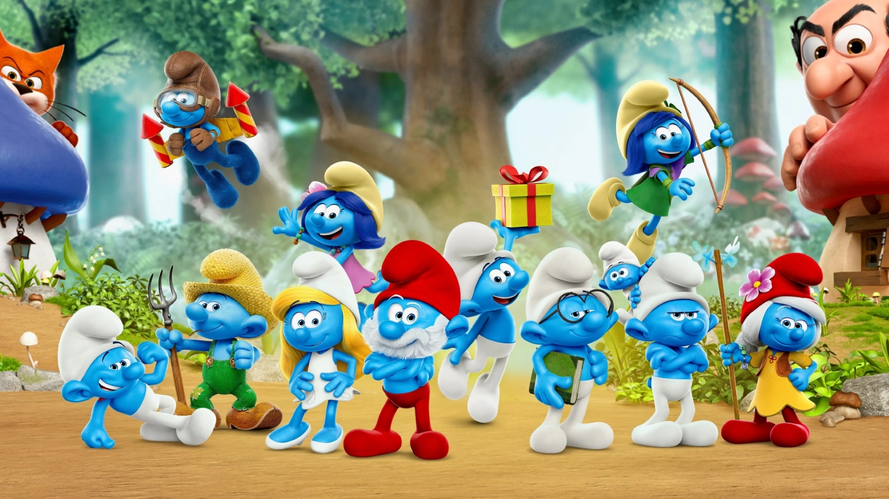
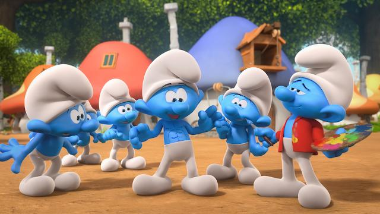

The Smurfs are a popular fictional race of small, blue creatures that originated in Belgian comic books. Created by cartoonist Peyo (Pierre Culliford), the Smurfs first appeared in 1958 as supporting characters in a series of stories in the comic strip Johan and Peewit. Due to their massive popularity, the Smurfs quickly became a standalone comic series and have since evolved into a global franchise.
The term "Smurf" came from a humorous miscommunication between Peyo and a friend over dinner. Peyo had asked his friend to pass the salt, but instead, he said "Smurf," leading to the creation of the now iconic name.
Smurfs are typically depicted as small, humanoid creatures with blue skin, white pants, and white hats. They are around 3 apples tall, and their size is a crucial element to their charm and the humor of the stories.
The Smurfs have become a part of popular culture, representing friendship, cooperation, and positivity across generations.

In the Smurfs universe, contests often serve as a backdrop for humor, competition, and character development. One notable example is the "Mr. Smurf Contest".
In this event, Smurfs compete in categories like talent shows, dance, and creativity. Gargamel disguises himself to infiltrate the contest, but his plan fails.
Smurfette ultimately declares everyone a winner, emphasizing teamwork and equality.
The spirit of Smurfs contests is all about fun, creativity, and community.